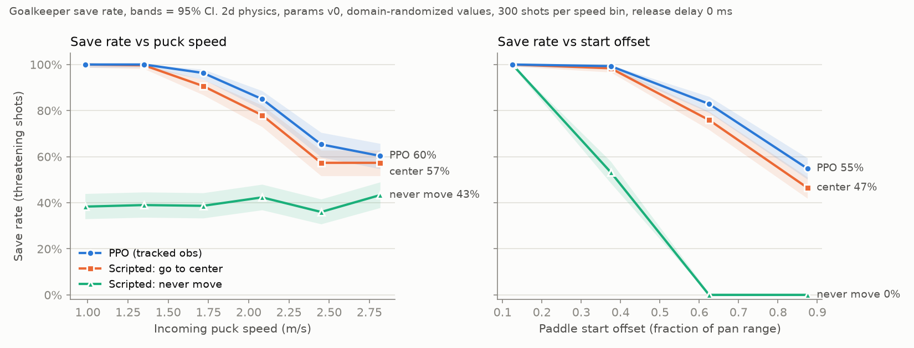
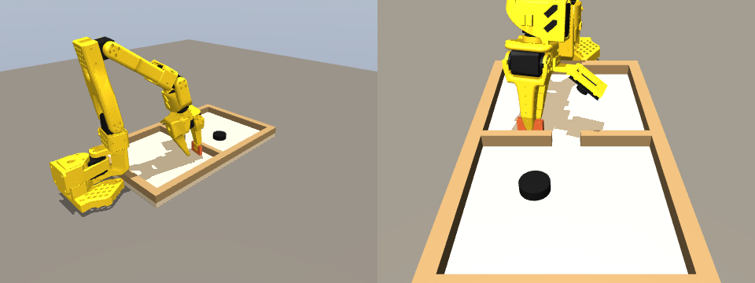
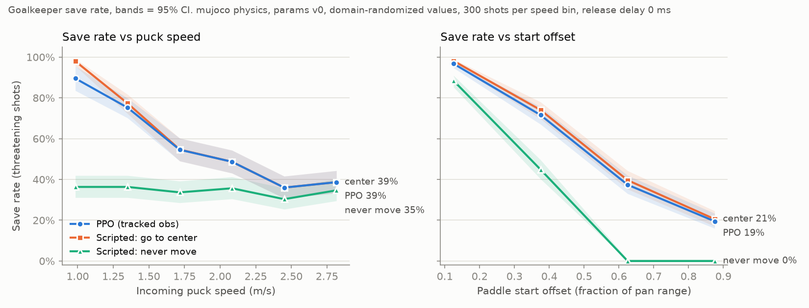
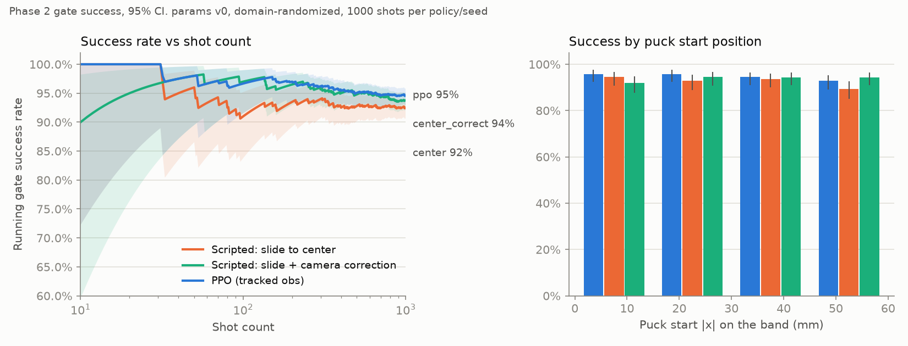
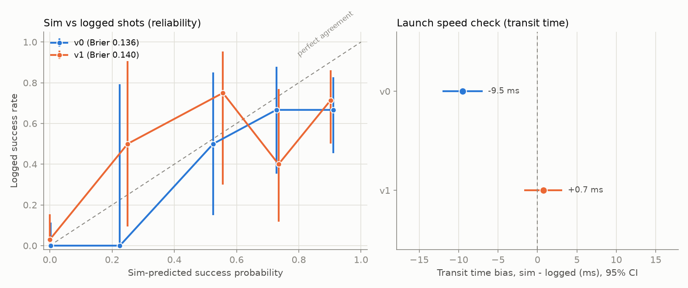
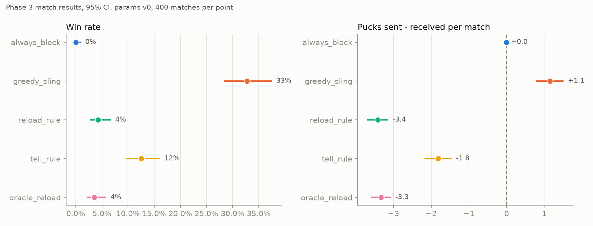
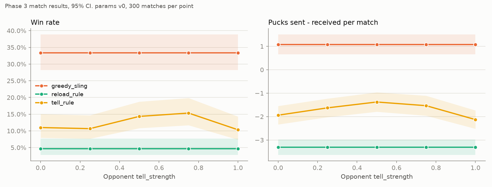

The project builds a training and evaluation workspace for an SO-101 arm (6-DOF, Feetech STS3215 servos) that plays tabletop sling puck on a moopok Fast Sling Puck board (size M), in three phases: Phase 1 goalkeeper (block pucks at the gate), Phase 2 targeted shot (sling a puck through the gate), and Phase 3 a match against an opponent (choose when to block, sling or hold).
| Milestone | Content | Status |
|---|---|---|
| M1 | Physics, servo, camera, tracker, config versioning, unit tests | Done |
| M2 | Phase 1 env, asymmetric PPO, save-rate eval, viewers | Done (3 seeds) |
| — | MuJoCo backend for Phase 1, 3D viewer, sim-to-sim eval (user request) | Done |
| M3 | Phase 2 env, band and deflection models, sysid with synthetic logs, parity eval | Done (3 seeds) |
| M4 | Opponent model, Phase 3 match env, frozen primitives, rule-based baselines | Done |
| M5 | Selector training, ablations, vulnerability window, ONNX, latency | Not started |
All milestones wait for the user's review. Git history (oldest first):
| Commit | Message |
|---|---|
10d29f9 | Baseline snapshot before M1 rework |
c20b8ea | M1: config versioning, servo/camera/tracker fixes, fast 2D puck sim, tests |
7810cbe | Config: user-measured puck mass (27 g) and gate width (~1.25 in) |
36e0faa | M2: goalkeeper env on Fast2DPuckSim, asymmetric PPO, save-rate eval |
69ce734 | M2: recovery task (paddle locked until launch + release delay), grid eval |
74d72f9 | Add top-down slow-motion goalkeeper viewer |
d8b2414 | README: full project documentation (setup, configs, models, Phase 1, results, open items) |
88ebf85 | Fix trained-run loading across module paths; document how to run |
6f285e8 | WIP: MuJoCo goalkeeper backend, 3D viewer, eval backend option |
c2947e0 | MuJoCo goalkeeper: calibrated contacts, planar puck, tests, sim-to-sim results |
d354cd8 | M3: pre-stretched band with closed hysteresis loop, arm deflection, Phase 2 sling env |
90506f0 | Band release: puck that cannot beat friction stays behind the band (no launch) |
acb49f4 | Sysid: log schemas, synthetic logs, band/servo/shot fits |
3a1b0d0 | M3: run_sysid, hole-rate and parity eval, schema docs, example logs, results |
2c192eb | M4: opponent model, event-level match env, frozen primitives, baselines, match eval |
The configuration flows into the physics and sensing models; the environments combine them into Gymnasium tasks; the policies are trained on the environments and evaluated by eval/. Phase 3 uses the Phase 1 and Phase 2 skills as frozen primitives: their measured performance tables. sysid closes the sim2real2sim loop: real logs produce a new physics parameter version, which the sims load.
Board frame
Origin at the board center; x across the width, y along the length. The agent half is y < 0, the opponent half y > 0, and the center divider with the gate is at y = 0. Pucks launched by the agent move toward +y.
Fidelity levels
| Sim | Used for | Speed |
|---|---|---|
| Fast2DPuckSim + ServoModel | Phase 1 and 2 training and eval | ~2,300 control steps/s per process |
| MuJoCo (board, puck, SO-101 arm) | Phase 1 sim-to-sim check, 3D viewing | ~180 episodes/s |
| MatchEnv (event level, primitive tables) | Phase 3 selector | ~70,000 decisions/s |
load_config(params_version) merges, in this order: servo.yaml →
physics_params_v<N>.yaml → env.yaml.
| File | Content |
|---|---|
configs/physics_params_v0.yaml | Measured or fitted physics, version 0 (uncalibrated): board, puck, band, arm compliance, robot mounting and paddle, camera, servo overrides, and the placeholder list. Each value has a source tag: [spec] listing text, [image] listing image, [user] user measurement, [derived] computed, TODO unknown. |
configs/servo.yaml | Servo model: max rate (300 deg/s), lag time constant, deadband, command latency (all placeholders). |
configs/env.yaml | Design choices: sim timing (physics 1 ms, control 30 Hz, MuJoCo 0.5 ms), tracker tuning,
goalkeeper task (pan range, speeds, pre-launch, recovery lock), sling task (ranges, noise, correction,
reward shaping), opponent (cycle timing, accuracy, tell), match (pucks, robot timings, block table grid),
scoring (placeholder rules) and randomization (domain randomization ranges). |
configs/train_goalkeeper.yaml, train_sling.yaml | PPO hyperparameters, policy type (asymmetric or mlp), number of envs, steps and seeds. |
33 values are still placeholders in v0:
servo.max_rate_deg_sservo.lag_tau_sservo.deadband_degservo.command_latency_sboard.wall_thickness_mboard.divider_thickness_mboard.gate_width_mboard.restitutionboard.paddle_restitutionpuck.radius_mpuck.thickness_mpuck.friction_kineticpuck.restitutionband.anchor_span_mband.band_offset_from_end_wall_mband.natural_length_mband.stiffness_k_n_mband.stiffness_exponentband.hysteresis_loss_factorband.energy_transferband.max_pull_marm.deflection_compliance_m_per_nrobot.base_xy_mrobot.pan_zero_offset_radrobot.paddle_width_mrobot.paddle_thickness_mrobot.paddle_height_mrobot.paddle_mass_kgrobot.base_z_mboard.wall_height_mcamera.latency_scamera.noise_std_mcamera.dropout_probOther data: data/real_logs/schema.md (how to record the sysid logs),
data/real_logs/synthetic_example/ (small synthetic logs with truth.yaml),
assets/mujoco/robotstudio_so101/ (SO-101 MuJoCo model and meshes), assets/urdf/so101.urdf (not used yet),
cache/ (primitive tables), logs/, tensorboard_logs/, results/ (outputs, not in git).







For each file: what it is for, how it works, important notes, and a table of its classes, functions and methods (read from the code). Small helper functions nested inside other functions are part of their parent's description.
src/slingpuck/config.pyConfiguration loading, parameter versions, randomization · 211 lines
Every other module reads its numbers from one merged configuration dictionary built here. load_config() merges three YAML files from configs/: servo.yaml, then physics_params_v<N>.yaml, then env.yaml. A later file overrides an earlier one key by key.
Physics parameters are versioned. sysid writes physics_params_v1.yaml, v2, ...; 'latest' loads the highest version, and the loader checks that the version inside the file matches its name.
Every value that is not measured is listed under 'placeholders:' in its file. strict=True refuses to load while any placeholder or null value remains, so no result can be reported against real data by accident with guessed numbers.
cfg['meta'] records the params version, the placeholder list, the git hash and whether the working tree had uncommitted changes. save_run_config() writes all of this, plus the seed, next to every training run.
Important
| Kind | Name | Arguments | What it does |
|---|---|---|---|
| class | ConfigError | class(ValueError) | Error raised for a bad or uncalibrated config. |
| function | config_dir | (path=None) | Return the config folder: the argument, else $SLINGPUCK_CONFIG_DIR, else configs/. |
| function | available_param_versions | (cfg_dir=None) | List the version numbers of the physics_params_v<N>.yaml files in a folder. |
| function | resolve_params_file | (version='latest', cfg_dir=None) | Map "latest", "v3", "3" or 3 to configs/physics_params_v3.yaml. |
| function | _read_yaml | (path) | Read one YAML file (empty file -> empty dict). |
| function | deep_merge | (base, override) | Merge two nested dicts; values from 'override' win, key by key. |
| function | get_path | (cfg, dotted) | Read a value by dotted path, e.g. 'puck.mass_kg'. |
| function | set_path | (cfg, dotted, value) | Write a value by dotted path. |
| function | _find_nulls | (node, prefix='') | List the dotted paths of all null values. |
| function | git_state | () | Return the git hash and whether the working tree has uncommitted changes. |
| function | load_config | (params_version='latest', strict=False, cfg_dir=None, overrides=None) | Load and merge configs. |
| function | sample_randomized | (cfg, rng) | Return a copy of cfg with domain-randomized physics values. |
| function | save_run_config | (cfg, run_dir, seed=None) | Write the full merged config, params version, git state and seed to run_dir. |
src/slingpuck/kinematics.pyGoalkeeper kinematics shared by the sim and the robot · 69 lines
GoalkeeperGeometry is the only mapping from a policy action in [-1, 1] to a board-frame pan angle and then to the SO-101 shoulder_pan joint command. The env and the LeRobot interface both use it, so the sim and the robot cannot disagree (the original code mapped action 1.0 to 0.19 rad in the sim and to 0.5 rad on the robot).
It also computes the paddle pose on its arc (center, angle, velocity, angular velocity) for the physics sim. pan = 0 puts the paddle center on the gate line; positive pan moves it toward +x.
Important
| Kind | Name | Arguments | What it does |
|---|---|---|---|
| class | GoalkeeperGeometry | class | Base position, arm radius, pan range, paddle size and joint zero offset. |
| method | GoalkeeperGeometry.from_config | classmethod (cfg) | Build from the config and check that the geometry is valid. |
| method | GoalkeeperGeometry.action_to_pan | (action) | Policy action in [-1, 1] to board-frame pan angle. |
| method | GoalkeeperGeometry.pan_to_action | (pan) | Inverse of action_to_pan (clipped to [-1, 1]). |
| method | GoalkeeperGeometry.pan_to_joint | (pan) | Board-frame pan angle to the SO-101 shoulder_pan joint command. |
| method | GoalkeeperGeometry.joint_to_pan | (joint) | Joint reading to board-frame pan angle. |
| method | GoalkeeperGeometry.paddle_center | (pan) | Paddle center position on its arc for a pan angle. |
| method | GoalkeeperGeometry.paddle_state | (pan, pan_vel, restitution) | PaddleState (pose, velocity, angular velocity) for the physics sim. |
src/slingpuck/physics/backend.pyPhysics backend interface · 62 lines
Defines the PuckPhysicsBackend abstract class (reset, get_state, set_paddle, step, kinetic_energy) and the small data classes it uses: PaddleState (a kinematic box), GateCrossing and StepEvents.
The envs talk only to this interface, so the fast 2D sim and the MuJoCo sim can replace each other without env changes (the plan asked for a swappable backend).
Board frame: origin at the board center, x across the width, y along the length; the agent half is y < 0, the opponent half y > 0, and the divider with the gate is at y = 0.
| Kind | Name | Arguments | What it does |
|---|---|---|---|
| class | GateCrossing | class | A puck crossed y = 0: puck index, direction (+1 to the opponent), x. |
| class | PaddleState | class | Kinematic box moved by the arm. |
| class | StepEvents | class | Events of one step: gate crossings and paddle contacts. |
| class | PuckPhysicsBackend | class(ABC) | Abstract interface every puck physics backend implements. |
| method | PuckPhysicsBackend.reset | (pos, vel) | Set puck positions and velocities, shape (n_pucks, 2). |
| method | PuckPhysicsBackend.get_state | () | Return copies of (pos, vel), shape (n_pucks, 2). |
| method | PuckPhysicsBackend.set_paddle | (paddle) | Set the paddle pose for the next step(s). |
| method | PuckPhysicsBackend.step | (dt) | Advance the sim by dt and return the events in this step. |
| method | PuckPhysicsBackend.kinetic_energy | () | Total translational kinetic energy of all pucks, in J. |
src/slingpuck/physics/puck_dynamics.pyFast2DPuckSim: the fast planar puck sim · 241 lines
Planar pucks with Coulomb sliding friction (constant deceleration mu*g, stop without reversal), side and end walls, the center divider with the gate gap, puck-puck contacts, and an optional kinematic paddle (an oriented box with linear and angular velocity).
step(dt) returns StepEvents: the gate crossings (with direction) and the paddle contacts.
How it works
| Kind | Name | Arguments | What it does |
|---|---|---|---|
| class | BoardGeometry | class | Inner board size, gate width, divider thickness, wall restitution. |
| method | BoardGeometry.from_config | classmethod (cfg) | Build from cfg['board']. |
| method | BoardGeometry.half_length | property () | Half of the inner length. |
| method | BoardGeometry.half_width | property () | Half of the inner width. |
| method | BoardGeometry.divider_boxes | () | Two divider blocks beside the gate, rows of [xmin, xmax, ymin, ymax]. |
| class | PuckParams | class | Puck radius, mass, friction and puck-puck restitution. |
| method | PuckParams.from_config | classmethod (cfg) | Build from cfg['puck']. |
| function | _reflect | (vx, vy, nx, ny, e, sx=0.0, sy=0.0) | Reflect the velocity component along normal n (relative to surface velocity s) if approaching. |
| class | Fast2DPuckSim | class(PuckPhysicsBackend) | The fast planar puck simulator (implements PuckPhysicsBackend). |
| method | Fast2DPuckSim.__init__ | (board, puck, n_pucks=1) | Check restitutions and that the gate is wider than the puck. |
| method | Fast2DPuckSim.from_config | classmethod (cfg, n_pucks=1) | Build from the merged config. |
| method | Fast2DPuckSim.reset | (pos, vel) | Set positions and velocities; reject pucks outside the board. |
| method | Fast2DPuckSim.get_state | () | Copies of positions and velocities. |
| method | Fast2DPuckSim.set_paddle | (paddle) | Set (or remove) the kinematic paddle for the next steps. |
| method | Fast2DPuckSim.kinetic_energy | () | Total translational kinetic energy. |
| method | Fast2DPuckSim.step | (dt) | Advance dt: friction, motion, paddle, walls, divider, puck-puck; return events. |
| method | Fast2DPuckSim._step_puck | (p, v, dt, decel, side_before) | Advance one puck in place (p, v are [x, y] lists). |
| method | Fast2DPuckSim._collide_paddle | (x, y, vx, vy, r) | Circle vs oriented box contact, using the paddle surface velocity. |
| method | Fast2DPuckSim._collide_pucks | () | Equal-mass impulse between overlapping pucks. |
src/slingpuck/physics/servo_model.pyServo model (Feetech STS3215) · 54 lines
Each step: command latency (exactly round(latency/dt) steps) -> deadband (errors smaller than the deadband are ignored) -> first-order lag (exact discretization of tau*dx/dt = target - x) -> rate limit (default 300 deg/s). Works for one joint or an array of joints.
Important
| Kind | Name | Arguments | What it does |
|---|---|---|---|
| function | latency_steps | (latency_s, dt) | Number of whole steps of delay. |
| class | ServoModel | class | Position servo: latency, deadband, first-order lag, rate limit. |
| method | ServoModel.__init__ | (config, dt, init_pos=0.0) | Read the servo config (deg -> rad) and set up the latency queue. |
| method | ServoModel.effective_latency_s | property () | Latency after rounding to whole steps. |
| method | ServoModel.reset | (pos=0.0) | Set the position and fill the latency queue with it. |
| method | ServoModel.step | (target) | Apply one command and return the new position. |
src/slingpuck/physics/band_model.pySling band: pre-tension, nonlinear tension, closed hysteresis loop, release · 147 lines
The band runs between two pegs at (+-span/2, band_y). The arm pulls the puck back to point P; the band makes a V and pushes P forward with force T*(u_left + u_right).
The band is pre-stretched (natural length < peg span). The pre-tension gives most of the launch energy: without it, a 3 cm pull would launch a 27 g puck at about 0.4 m/s, too slow to reach the gate.
How it works
Important
| Kind | Name | Arguments | What it does |
|---|---|---|---|
| class | BandParams | class | Peg span, natural length, stiffness, exponent, hysteresis, energy transfer. |
| method | BandParams.from_config | classmethod (cfg) | Build from cfg['band']. |
| class | ReleaseResult | class | Exit position and velocity, release time, band work, launched flag. |
| class | BandModel | class | Band geometry, tension laws and release dynamics. |
| method | BandModel.__init__ | (params, band_y) | Check the parameters and place the anchors on the band line. |
| method | BandModel.from_config | classmethod (cfg) | Build from the config (band line from the end-wall offset). |
| method | BandModel.tension_load | (s) | Loading tension for an elongation. |
| method | BandModel.work_load | (s0, s1) | Integral of T_l from s0 to s1. |
| method | BandModel.tension_unload | (s, s_max) | Unloading tension on the way back from s_max to the rest elongation. |
| method | BandModel.elongation | (pos) | Band length through a point minus the natural length. |
| method | BandModel.direction_sum | (pos) | u_left + u_right: the force direction times sin-like factor (zero on the band line). |
| method | BandModel.force_load | (pos) | Band force on the puck at pos while the band is being stretched. |
| method | BandModel.release | (pull_pos, mass, mu, dt=0.0001, max_t=0.3) | Integrate the release from a pulled point; return a ReleaseResult. |
src/slingpuck/physics/arm_deflection.pyArm deflection under band load · 53 lines
The arm gives way a little under the band force: actual pull = commanded pull - compliance * F_par, where F_par is the band force component that resists the pull. solve_pull() finds the actual pull by bisection, which always converges because d + c*F_par(d) increases with d.
pull_direction(angle) gives the unit pull vector (angle 0 = straight back, away from the gate).
Important
| Kind | Name | Arguments | What it does |
|---|---|---|---|
| class | PullResult | class | Actual puck position, actual pull distance, band force there. |
| function | pull_direction | (angle_rad) | Unit pull direction. |
| function | solve_pull | (band, start, angle_rad, pull_cmd_m, compliance_m_per_n, tol=1e-09) | Solve actual pull = command - compliance * resisting force (bisection). |
src/slingpuck/physics/mujoco_goalkeeper.pyMuJoCo physics for the goalkeeper (board, puck, SO-101 arm) · 499 lines
Builds a MuJoCo scene in code (MjSpec) from the merged config: the real-size board, walls, divider and gate, the puck, and the RobotStudio SO-101 model (STS3215 actuators, kp 998, +-2.94 N m) holding a paddle in front of the gate. It implements PuckPhysicsBackend, so the Phase 1 env runs on it.
How it works
| Kind | Name | Arguments | What it does |
|---|---|---|---|
| function | _rotz | (yaw) | Rotation matrix about z. |
| function | _pan_anchor_local | () | shoulder_pan axis position in the SO-101 base frame. |
| class | SceneLayout | class | Board-frame positions derived from the config. |
| method | SceneLayout.from_config | classmethod (cfg) | Compute base pose and paddle target from the config. |
| class | ArmHoldPose | class | IK joints, sag-corrected hold targets, settled pose, paddle mount pose, errors. |
| function | _divider_boxes | (cfg) | The two divider blocks beside the gate. |
| function | _build_spec | (cfg, layout, pose) | Build the MjSpec: SO-101, board, walls, divider, puck, paddle, pairs, lights, cameras. |
| function | _stiffness | (cfg) | Contact stiffness for the configured contact time. |
| function | _add_pairs | (spec, cfg) | Contact pairs. |
| class | ContactCalibration | class | Measured restitution vs contact damping, for walls and for the arm-held paddle. |
| method | ContactCalibration.solref | (kind, restitution) | Interpolate (-stiffness, -damping) for a target restitution. |
| function | _qadr | (model, names) | qpos addresses of joints by name. |
| function | _park_puck | (model, data, cfg, xy=(0.0, 0.1)) | Put the puck at rest (used while the arm settles). |
| function | solve_hold_pose | (cfg, layout) | Inverse kinematics for the paddle pose at pan = 0, then gravity-sag compensation. |
| function | calibrate_contacts | (sim, impact_speed=2.0, n=24, n_phases=5) | Measure restitution vs damping in the real scene (no friction during the test). |
| function | _pose_key | (cfg) | Cache key of the config values that change the arm pose. |
| class | MujocoGoalkeeperSim | class(PuckPhysicsBackend) | PuckPhysicsBackend on MuJoCo. |
| method | MujocoGoalkeeperSim.__init__ | (cfg) | Solve (or reuse) the arm pose, compile the model, calibrate contacts. |
| method | MujocoGoalkeeperSim.apply_params | (cfg) | Update friction, restitution, puck mass and gate width in place (no recompile). |
| method | MujocoGoalkeeperSim.reset_arm | (pan) | Put the arm at a pan angle in the settled hold pose. |
| method | MujocoGoalkeeperSim.set_pan_target | (pan) | Set the shoulder_pan actuator target. |
| method | MujocoGoalkeeperSim.pan | property () | Current board-frame pan angle. |
| method | MujocoGoalkeeperSim.pan_vel | property () | Current pan velocity. |
| method | MujocoGoalkeeperSim.paddle_center | () | Paddle center in the world. |
| method | MujocoGoalkeeperSim.reset | (pos, vel) | Set the puck position and velocity. |
| method | MujocoGoalkeeperSim.pos | property () | Puck position (1, 2). |
| method | MujocoGoalkeeperSim.vel | property () | Puck velocity (zero below 1 mm/s, so 'stopped' works). |
| method | MujocoGoalkeeperSim.get_state | () | Position and velocity. |
| method | MujocoGoalkeeperSim.set_paddle | (paddle) | No-op: the arm moves the paddle. |
| method | MujocoGoalkeeperSim.kinetic_energy | () | Puck kinetic energy. |
| method | MujocoGoalkeeperSim.step | (dt) | Apply friction, step MuJoCo, detect paddle contacts and gate crossings. |
| class | MujocoPanServo | class | Servo adapter: command latency in software, then the MuJoCo STS3215 actuator. |
| method | MujocoPanServo.__init__ | (sim, servo_cfg, dt) | Set up the command latency queue. |
| method | MujocoPanServo.reset | (pan) | Reset the arm and fill the queue. |
| method | MujocoPanServo.step | (target_pan) | Delay the command, send it to the actuator, return the pan. |
| method | MujocoPanServo.pos | property () | Pan angle (same interface as ServoModel). |
| method | MujocoPanServo.vel | property () | Pan velocity. |
src/slingpuck/sensing/camera_model.pyOverhead camera model · 61 lines
60 Hz frames with configurable latency, Gaussian position noise and random dropouts, using a seeded random generator. Each Frame carries its capture time and its arrival time. observe(t, true_xy) returns only the frames that arrive at this step, so a frame is never delivered twice (the original code fed the same stale frame to the tracker again and again).
| Kind | Name | Arguments | What it does |
|---|---|---|---|
| class | Frame | class | Capture time, arrival time and measured position of one frame. |
| class | CameraModel | class | Frame rate, latency, noise and dropouts. |
| method | CameraModel.__init__ | (config, rng=None) | Read the camera config. |
| method | CameraModel.reset | (t0=0.0, rng=None) | Restart frame timing and clear pending frames. |
| method | CameraModel.observe | (t, true_xy) | Capture when a frame is due; return frames that arrive now. |
| method | CameraModel._capture | (t, true_xy) | Take one frame: dropout or noisy measurement. |
src/slingpuck/sensing/kalman_tracker.pyConstant-velocity Kalman tracker with latency compensation · 81 lines
State [x, y, vx, vy], white-noise-acceleration process model, measurement noise from the camera config. It starts from the first frame. update() filters each frame at its capture time; estimate(t) predicts to the current time, which removes the camera latency (error < 25% of the raw frame in tests).
Important
| Kind | Name | Arguments | What it does |
|---|---|---|---|
| function | _transition | (dt, accel_std) | State transition and process noise for a time step. |
| class | KalmanTracker | class | Constant-velocity Kalman filter for one puck. |
| method | KalmanTracker.__init__ | (meas_noise_std_m, accel_noise_std_m_s2, init_vel_std_m_s=2.0) | Set measurement and process noise. |
| method | KalmanTracker.from_config | classmethod (cfg) | Build from the camera and tracker config. |
| method | KalmanTracker.reset | () | Forget the state. |
| method | KalmanTracker.initialized | property () | True after the first frame. |
| method | KalmanTracker.update | (frame) | Predict to the frame capture time and update (Joseph form). |
| method | KalmanTracker.estimate | (t_now) | Return (pos, vel, cov) predicted to t_now, or None before the first frame. |
src/slingpuck/envs/goalkeeper_env.pyPhase 1 env: goalkeeper (recovery task) · 268 lines
The opponent's puck rests at the opponent band line, then launches toward the gate. The policy commands the pan joint; the paddle swings on its arc. The policy sees only the Kalman-tracked puck, the pan encoder and its previous action (8 values). The true state is in info['privileged'] (16 values) for an asymmetric critic.
Recovery task (user decision): the gate is only ~1.5 mm wider than the puck, so a settled paddle blocks everything. The paddle is therefore locked at a random offset until the launch (plus release_delay_s), as if the arm were busy with a sling. The result is a time-to-cover measurement.
Reward: +1 save, -1 goal, 0 no threat, minus 0.01*|change of action|. With threats_only, shots are resampled until they would score with no paddle.
How it works
| Kind | Name | Arguments | What it does |
|---|---|---|---|
| class | Shot | class | Start, velocity, speed, pre-launch time, threat flag and tries of one shot. |
| class | GoalkeeperEnv | class(gym.Env) | Phase 1 Gymnasium env. |
| method | GoalkeeperEnv.__init__ | (config) | Read the task config and define the spaces. |
| method | GoalkeeperEnv.reset | (seed=None, options=None) | options: speed (m/s), start_pan (rad), randomize (bool). |
| method | GoalkeeperEnv._sample_shot | (options) | Sample start, aim and speed; resample until it is a threat. |
| method | GoalkeeperEnv._would_score | (start, vel) | Direct shot with no paddle: True if it enters the agent half before it turns back or stops. |
| method | GoalkeeperEnv.step | (action) | Apply the action for one control period (33 physics steps); return reward and outcome. |
| method | GoalkeeperEnv._build_physics | (cfg) | Create self.sim (PuckPhysicsBackend) and self.servo (.pos, .vel, .step, .reset). |
| method | GoalkeeperEnv._reset_physics | (pan0, puck_start) | Physics hook: reset servo, puck and paddle. |
| method | GoalkeeperEnv._physics_step | (target_pan) | Physics hook: servo step, paddle pose, sim step. |
| method | GoalkeeperEnv._substep | (target_pan) | Advance one physics step. |
| method | GoalkeeperEnv._check_outcome | (events) | Decide save / goal / none after a physics step. |
| method | GoalkeeperEnv._final_outcome | () | Outcome by side when the puck stops or time runs out. |
| method | GoalkeeperEnv._obs | () | The 8-value policy observation (tracked puck, encoder, previous action). |
| method | GoalkeeperEnv.privileged_obs | () | The 16-value critic observation (true state, randomized physics). |
| method | GoalkeeperEnv._info | (outcome) | Info dict: outcome, speed, threat, start pan, release delay, privileged. |
src/slingpuck/envs/mujoco_goalkeeper_env.pyPhase 1 env on MuJoCo physics · 37 lines
Same task, observation, action, reward and sensing as GoalkeeperEnv; only the three physics hooks change. A policy trained on the 2D sim runs here unchanged, which makes this a sim-to-sim test.
Important
| Kind | Name | Arguments | What it does |
|---|---|---|---|
| class | MujocoGoalkeeperEnv | class(GoalkeeperEnv) | GoalkeeperEnv with MuJoCo physics hooks. |
| method | MujocoGoalkeeperEnv.__init__ | (config) | Build the MuJoCo sim once. |
| method | MujocoGoalkeeperEnv._build_physics | (cfg) | Apply randomized parameters in place; set sim and servo. |
| method | MujocoGoalkeeperEnv._reset_physics | (pan0, puck_start) | Reset the arm at the start pan and place the puck. |
| method | MujocoGoalkeeperEnv._physics_step | (target_pan) | Send the pan command and step MuJoCo. |
src/slingpuck/envs/sling_env.pyPhase 2 env: targeted shot through the gate · 237 lines
Step 1 (aim): the policy sees the tracked puck at rest and chooses (slide x, pull angle, pull distance). The arm slides the puck along the band (placement noise), pulls it (angle and pull noise) and the arm deflects. Step 2 (correct): the policy sees the pulled puck and the band depth from the camera and applies a small correction; then the band releases and the puck flies on Fast2DPuckSim.
Reward: +1 for crossing the gate, plus 0.3*exp(-(miss/1 cm)^2), where miss is |x| at the divider.
How it works
| Kind | Name | Arguments | What it does |
|---|---|---|---|
| class | FlightResult | class | Success, miss distance, exit state and optional trajectory of one shot. |
| function | slide_limit | (cfg) | Largest |x| the puck can be slid to along the band. |
| function | realize_pull | (cfg, band, x_start, angle, pull, rng, noise_scale=1.0) | Arm pull with execution noise and deflection, kept inside the board. |
| function | launch_and_fly | (cfg, band, pull_pos, rng, record=False, physics_dt=0.001, full=False) | Release and fly. |
| class | SlingEnv | class(gym.Env) | Phase 2 Gymnasium env. |
| method | SlingEnv.__init__ | (config) | Read the task config and define the spaces. |
| method | SlingEnv.scale_aim | (action) | Map the step-1 action to slide x, pull angle and pull distance. |
| method | SlingEnv.scale_correction | (action) | Map the step-2 action to a lateral, angle and pull correction. |
| method | SlingEnv.reset | (seed=None, options=None) | options: x0 (puck start x), randomize (bool). |
| method | SlingEnv.step | (action) | Step 1: slide and pull (then observe). Step 2 (or step 1 without correction): correct, release, fly, reward. |
| method | SlingEnv._observe_still | (pos) | Camera watches the still puck for observe_window_s; returns the mean of the frames. |
| method | SlingEnv._obs | () | The 7-value policy observation. |
| method | SlingEnv.privileged_obs | () | The 12-value critic observation. |
| method | SlingEnv._info | (flight) | Info dict: start x, stage, outcome, miss, exit speed, commands, actual pull. |
src/slingpuck/envs/match_env.pyPhase 3 env: event-level match against the scripted opponent · 261 lines
The high-level policy picks one of three frozen primitives every 0.1 s: 0 block, 1 sling, 2 hold. Arm states: gate -> to_band -> slinging -> at_band -> to_gate. The gate is undefended from the sling command until the arm is back and settled (the explicit recovery time from the plan).
Nothing is simulated at 1 kHz: opponent shots fly straight with friction (analytic arrival time); a threat is saved with the probability from the measured block table; a sling succeeds with the Phase 2 probability. About 70,000 decisions per second.
Observation (20): tracked incoming puck (after the camera latency), opponent hand, arm state, puck counts, time. Privileged (11): opponent phase, time to release, next shot, incoming threat.
Reward and win rule come from 'scoring' (placeholder: +1 sent, -1 received, first empty side wins).
| Kind | Name | Arguments | What it does |
|---|---|---|---|
| class | MatchEnv | class(gym.Env) | Phase 3 Gymnasium env (event-level match). |
| method | MatchEnv.__init__ | (config, block_table=None) | Load (or build) the block table, set the sling primitive and the spaces. |
| method | MatchEnv.reset | (seed=None, options=None) | options: tell_strength (override for sweeps). |
| method | MatchEnv.step | (action) | Apply the action, advance 0.1 s in 10 ms steps, add win/loss reward. |
| method | MatchEnv.can_sling | () | True if the arm is free (gate or band), a puck is left and none is in flight. |
| method | MatchEnv._apply_action | (action) | Start a sling or a return to the gate (busy actions are ignored). |
| method | MatchEnv._advance | () | Advance the arm state machine, own puck, opponent and incoming pucks by one step. |
| method | MatchEnv._flight | (shot) | Analytic arrival time of an opponent shot at the gate. |
| method | MatchEnv._resolve | (f) | Resolve an arriving shot: miss, save (block table) or goal. |
| method | MatchEnv._match_over | () | Apply the win rule (first side with no pucks). |
| method | MatchEnv._incoming_state | () | Earliest-arriving opponent puck in flight that the camera has seen, true [x, y, vx, vy]. |
| method | MatchEnv._obs | () | The 20-value policy observation. |
| method | MatchEnv.privileged_obs | () | The 11-value critic observation. |
| method | MatchEnv._info | (outcome) | Info dict: outcome, counts, arm state, opponent phase, stats at the end. |
src/slingpuck/envs/wrappers.pyPrivileged observation wrapper · 33 lines
Turns an env's Box observation into a Dict {'policy': ..., 'privileged': ...}, taking the privileged vector from info. Used with the asymmetric actor-critic policy.
| Kind | Name | Arguments | What it does |
|---|---|---|---|
| class | PrivilegedObsWrapper | class(gym.ObservationWrapper) | Dict observation {"policy": actor obs, "privileged": critic-only obs}. |
| method | PrivilegedObsWrapper.__init__ | (env) | Define the Dict observation space. |
| method | PrivilegedObsWrapper.reset | (**kwargs) | Reset and keep the privileged vector from info. |
| method | PrivilegedObsWrapper.step | (action) | Step and keep the privileged vector from info. |
| method | PrivilegedObsWrapper.observation | (obs) | Build the Dict observation. |
src/slingpuck/opponent/scripted_opponent.pyScripted human opponent (Phase 3) · 141 lines
Cycle: reload (the hand fetches a puck) -> place (on the band) -> pull (pull ~ shot speed) -> hold (random pause) -> release, about 1.2 s per shot. Each cycle samples its timings, the launch x, the speed and whether the shot is a threat (launch |x| < 3 mm).
The hand covers the loaded puck from the camera, so only the hand is observed (position and velocity along straight segments, plus noise).
tell_strength: during place, pull and hold the hand x is tell*x_launch + (1-tell)*x_decoy, with the decoy from the same distribution, so 0 = no information and 1 = exact (tested).
| Kind | Name | Arguments | What it does |
|---|---|---|---|
| class | Shot | class | Launch time, launch x, speed and threat flag of one opponent shot. |
| class | _Cycle | class | Phase boundary times, hand waypoints and the shot of one cycle. |
| class | Opponent | class | The scripted opponent. |
| method | Opponent.__init__ | (cfg, rng) | Read the opponent config and the band line. |
| method | Opponent._launch_x | (threat) | Sample a launch x for a threat or a miss. |
| method | Opponent._start_cycle | (t0, start_pos) | Sample one full cycle: timings, shot, tell, hand waypoints. |
| method | Opponent.reset | (t0, has_puck) | Start at home; begin a cycle if the opponent has a puck. |
| method | Opponent.advance | (t, has_puck) | Advance to time t. |
| method | Opponent.phase | (t) | Current phase name. |
| method | Opponent.hand_true | (t) | True hand [x, y, vx, vy]. |
| method | Opponent.hand_observed | (t) | True hand plus camera noise. |
| method | Opponent.time_to_release | (t) | Seconds until the next release (privileged). |
| method | Opponent.next_shot | property () | The shot of the current cycle (privileged). |
src/slingpuck/primitives/block.pyFrozen block primitive: save-probability table · 114 lines
Measures, once, on the Phase 1 env with a frozen block policy: p_gate(speed) for a paddle settled at the gate when the shot launches, and p_edge(speed, delay) for a paddle that is just back from the band at the edge of its range and free 'delay' seconds after the launch. Cached in cache/ under a hash of everything that changes it (about 40 s to build).
The table shows the vulnerability window: from the edge the paddle saves 100% of 1 m/s shots, 60% at 1.6 m/s and almost none above 2 m/s; a settled paddle saves 100% at every speed.
| Kind | Name | Arguments | What it does |
|---|---|---|---|
| class | BlockTable | class | Speeds, delays, p_gate and p_edge arrays. |
| method | BlockTable.p_save | (speed, at_gate, delay=0.0) | Save probability for a speed, gate/edge start and delay (interpolated). |
| method | BlockTable._edge_at | (s, d) | Bilinear interpolation in the edge table. |
| function | _cache_key | (cfg, policy, speeds, delays, episodes, seed) | Hash of everything that changes the table. |
| function | _policy | (cfg, policy) | The block policy: scripted center or a trained run. |
| function | build_block_table | (cfg, policy='center', speeds=None, delays=None, episodes=40, seed=...) | Measure the table on the Phase 1 env. |
| function | load_or_build_block_table | (cfg, verbose=True) | Load the cached table, or build and cache it. |
src/slingpuck/primitives/sling.pyFrozen sling primitive: timings and success probability · 29 lines
Holds the sling timing (move to the band, fetch a puck, sling core, flight) and the Phase 2 success probability, from the config.
| Kind | Name | Arguments | What it does |
|---|---|---|---|
| class | SlingPrimitive | class | Sling timings and success probability. |
| method | SlingPrimitive.from_config | classmethod (cfg) | Build from cfg['match']. |
| method | SlingPrimitive.at_band_s | property () | Time from the arm at the band to the release: fetch the puck, then the sling core. |
src/slingpuck/policies/asymmetric.pyAsymmetric actor-critic for Stable-Baselines3 PPO · 74 lines
The actor reads only obs['policy'] (deployable sensors); the critic reads obs['policy'] and obs['privileged'] (sim truth and randomized physics). Only the actor is deployed. A test checks that changing the privileged input does not change the actor output and does change the value.
How it works
| Kind | Name | Arguments | What it does |
|---|---|---|---|
| class | KeySelectExtractor | class(BaseFeaturesExtractor) | Concatenate the selected keys of a Dict observation. |
| method | KeySelectExtractor.__init__ | (observation_space, keys=ACTOR_KEYS) | Feature size = sum of the selected keys. |
| method | KeySelectExtractor.forward | (observations) | Concatenate the selected keys. |
| class | AsymmetricMlpExtractor | class(nn.Module) | MlpExtractor with different input sizes for the actor and the critic. |
| method | AsymmetricMlpExtractor.__init__ | (pi_dim, vf_dim, net_arch, activation_fn, device) | Actor MLP on the actor input size, critic MLP on the critic size. |
| method | AsymmetricMlpExtractor.forward | (features) | Run both networks. |
| method | AsymmetricMlpExtractor.forward_actor | (features) | Actor network. |
| method | AsymmetricMlpExtractor.forward_critic | (features) | Critic network. |
| class | AsymmetricActorCriticPolicy | class(ActorCriticPolicy) | SB3 ActorCriticPolicy with separate actor and critic inputs. |
| method | AsymmetricActorCriticPolicy.__init__ | (observation_space, action_space, lr_schedule, **kwargs) | Check the Dict space; force separate feature extractors. |
| method | AsymmetricActorCriticPolicy.make_features_extractor | () | First call: actor keys; second call: critic keys. |
| method | AsymmetricActorCriticPolicy._build_mlp_extractor | () | Use AsymmetricMlpExtractor. |
src/slingpuck/policies/scripted.pyScripted goalkeeper baselines (Phase 1) · 27 lines
CenterBlocker always commands pan = 0; HoldStart never moves. Both have the SB3 predict() signature, so the eval code treats them like trained models.
| Kind | Name | Arguments | What it does |
|---|---|---|---|
| class | CenterBlocker | class | Always command pan = 0. |
| method | CenterBlocker.predict | (obs, state=None, episode_start=None, deterministic=True) | Return action 0 for every observation. |
| class | HoldStart | class | Never move. |
| method | HoldStart.predict | (obs, state=None, episode_start=None, deterministic=True) | Return the previous action. |
src/slingpuck/policies/sling_scripted.pyScripted sling baselines (Phase 2) · 46 lines
SlideCenter slides the puck to x = 0 and pulls straight back. SlideCenterCorrect also uses the tracked pulled puck to shift it back to x = 0 in the correction step.
| Kind | Name | Arguments | What it does |
|---|---|---|---|
| class | SlideCenter | class | Slide to x = 0, pull straight back, no correction. |
| method | SlideCenter.__init__ | (pull_frac=0.8) | Set the pull fraction. |
| method | SlideCenter.predict | (obs, state=None, episode_start=None, deterministic=True) | Aim action at step 1, zero correction at step 2. |
| class | SlideCenterCorrect | class(SlideCenter) | SlideCenter plus a lateral correction from the camera. |
| method | SlideCenterCorrect.__init__ | (config, pull_frac=0.8) | Read the board length and the correction range. |
| method | SlideCenterCorrect.predict | (obs, state=None, episode_start=None, deterministic=True) | At step 2, shift the puck back to x = 0. |
src/slingpuck/policies/match_scripted.pyScripted match selectors (Phase 3) · 96 lines
AlwaysBlock, GreedySling (sling whenever possible, never return), ReloadRule (the plan's baseline: sling only when the opponent reloads, detected from the hand; otherwise go back to the gate), TellRule (also slings while the opponent aims if the hand x shows a likely miss) and OracleReload (ReloadRule with the true opponent phase).
| Kind | Name | Arguments | What it does |
|---|---|---|---|
| class | _Base | class | Common predict() for Box or Dict observations. |
| method | _Base.predict | (obs, state=None, episode_start=None, deterministic=True) | Call act() with the policy (and privileged) vector. |
| method | _Base.arm | (obs, s) | True if the arm is in the given state. |
| class | AlwaysBlock | class(_Base) | Never sling. |
| method | AlwaysBlock.act | (obs, priv) | Return block. |
| class | GreedySling | class(_Base) | Sling whenever possible. |
| method | GreedySling.act | (obs, priv) | Return sling. |
| class | ReloadRule | class(_Base) | Sling only while the opponent reloads (hand away from its band line). |
| method | ReloadRule.__init__ | (config, margin_m=0.01) | Read the opponent band line and the margin. |
| method | ReloadRule.reloading | (obs, priv) | Hand away from the opponent band line. |
| method | ReloadRule.safe | (obs, priv) | Safe to sling = opponent reloading. |
| method | ReloadRule.act | (obs, priv) | Sling if safe and no puck is incoming, else block. |
| class | TellRule | class(ReloadRule) | Also sling during the opponent's aim when the hand x shows a likely miss. |
| method | TellRule.__init__ | (config, miss_threshold_m=0.006, margin_m=0.01) | Set the miss threshold for the hand x. |
| method | TellRule.safe | (obs, priv) | Reloading, or the hand x shows a likely miss. |
| class | OracleReload | class(ReloadRule) | Uses the opponent's true phase (privileged). |
| method | OracleReload.reloading | (obs, priv) | True opponent phase is reload or idle. |
src/slingpuck/train/common.pyShared training code · 158 lines
Env factories (goalkeeper with a '2d' or 'mujoco' backend, sling), picklable factories for SubprocVecEnv, load_trained_run() (loads a model with either import path), the outcome-rate TensorBoard callback, and train_ppo()/train_cli(): one reproducible PPO run per seed with its run folder (config, params version, git hash, seed, checkpoints, final model).
| Kind | Name | Arguments | What it does |
|---|---|---|---|
| function | make_goalkeeper_env | (config, asymmetric, backend='2d') | backend: "2d" (Fast2DPuckSim + ServoModel) or "mujoco" (MuJoCo board, puck and SO-101). |
| function | goalkeeper_env_fn | (config, asymmetric, backend='2d') | Picklable env factory for SubprocVecEnv. |
| function | make_sling_env | (config, asymmetric) | SlingEnv, wrapped for the asymmetric policy if needed. |
| function | sling_env_fn | (config, asymmetric) | Picklable env factory for SubprocVecEnv. |
| function | load_trained_run | (run_dir, device='cpu') | Load final_model.zip from a training run. |
| function | load_train_config | (path) | Read a train_*.yaml file. |
| function | new_run_dir | (task, params_version, seed) | Run id and folder: logs/<task>/<task>_<params>_s<seed>_<time>. |
| class | OutcomeLoggerCallback | class(BaseCallback) | Log the fraction of episode outcomes (info["outcome"]) per rollout to TensorBoard. |
| method | OutcomeLoggerCallback.__init__ | (prefix, outcomes=('save', 'goal', 'none')) | Set the outcome names to count. |
| method | OutcomeLoggerCallback._on_step | () | Count outcomes of finished episodes. |
| method | OutcomeLoggerCallback._on_rollout_end | () | Log outcome rates to TensorBoard and reset the counts. |
| function | train_ppo | (task, env_fn_factory, outcomes, config, train_cfg, seed) | One reproducible PPO run. |
| function | train_cli | (task, env_fn_factory, outcomes, default_train_config) | Command-line entry point shared by the train_* scripts. |
src/slingpuck/train/train_goalkeeper.pyPhase 1 training entry point · 10 lines
Calls train_cli for the goalkeeper (configs/train_goalkeeper.yaml).
src/slingpuck/train/train_sling.pyPhase 2 training entry point · 10 lines
Calls train_cli for the sling shot (configs/train_sling.yaml).
src/slingpuck/eval/stats.pyConfidence intervals · 28 lines
wilson_ci() for proportions and t_ci() for means across runs (training seeds).
| Kind | Name | Arguments | What it does |
|---|---|---|---|
| function | wilson_ci | (successes, n, confidence=0.95) | Wilson score interval for a binomial proportion. |
| function | t_ci | (values, confidence=0.95) | Mean and Student-t interval across independent runs (e.g. |
src/slingpuck/eval/save_rate_vs_speed.pyPhase 1 eval: save rate vs puck speed · 244 lines
Runs trained goalkeeper runs and the scripted baselines on the same shots (paired seeds), with stratified speed bins, and reports the save rate vs speed, vs paddle start offset, and the speed x offset grid (the time-to-cover table), with 95% CIs. --backend mujoco runs the same eval on MuJoCo.
PPO CI = union of a t interval across training seeds and a Wilson interval over one seed's shots (all seeds learned the same saturated policy, so the t interval alone had zero width).
| Kind | Name | Arguments | What it does |
|---|---|---|---|
| function | run_episodes | (policy, config, asymmetric, speed_bins, episodes_per_bin, base_see...) | Return list of dicts: speed, start_offset (fraction of pan range), saved. |
| function | in_bin | (value, bins, b) | True if a value is in bin b (last bin includes its upper edge). |
| function | rate_with_ci | (groups, select) | Save rate and 95% CI over the rows that `select` accepts, for one policy. |
| function | summarize | (results, key, bins) | results: {policy: [rows per group]}. |
| function | summarize_grid | (results, speed_bins, start_bins) | Save rate per (speed bin, start-offset bin) for each policy. |
| function | plot | (speed_table, start_table, out_path, subtitle) | Two panels: save rate vs speed and vs start offset, with CI bands. |
| function | write_csv | (path, table) | Write a list of dicts to CSV. |
| function | main | () | Command line: evaluate runs and baselines, write tables, plot and metadata. |
src/slingpuck/eval/hole_rate.pyPhase 2 eval: gate success rate and sim-vs-real parity · 345 lines
Policy mode: success rate vs shot count and by puck start position, for trained runs and baselines.
Parity mode: replays every logged shot many times in the sim and compares (a) success (Brier score, reliability diagram) and (b) the transit time from 2 cm past the band line to y = -4 cm. Success depends mostly on the lateral aim and cannot see a speed error; the transit time can.
| Kind | Name | Arguments | What it does |
|---|---|---|---|
| function | run_shots | (policy, config, asymmetric, n_shots, base_seed) | Run one policy for n shots; return per-shot results. |
| function | summarize | (results, x_bins) | Success rates overall and by start position, with CIs. |
| function | _style | (ax) | Common axis style. |
| function | plot_policies | (results, table, x_bins, out_path, subtitle) | Running success vs shot count, and success by start position. |
| function | _crossing_time | (t, y, y_level) | First time y reaches y_level (linear interpolation between frames), or None. |
| function | _transit | (t, y, band_y) | Transit time from 2 cm past the band line to y = -4 cm. |
| function | parity | (shots_csv, versions, cfg_dir, repeats, seed) | Replay logged shots in the sim for each params version. |
| function | parity_report | (observed, obs_transit, preds, out_dir) | Brier score, reliability table, transit bias; parity plot. |
| function | write_csv | (path, rows) | Write a list of dicts to CSV. |
| function | main | () | Command line: policy mode or parity mode. |
src/slingpuck/eval/match_eval.pyPhase 3 eval: match results · 181 lines
Plays every policy on the same matches and reports win, loss and time-out rates, the mean puck difference, slings, pucks conceded while away and the save rate, with 95% CIs. Supports a tell_strength sweep (--tell) and the hand ablation (--no-hand). Each policy keeps a fixed color.
| Kind | Name | Arguments | What it does |
|---|---|---|---|
| function | play | (policy, env, n_matches, base_seed, tell) | Play n matches with one policy; return per-match stats. |
| function | summarize | (name, tell, rows) | Rates and means with CIs for one policy and tell value. |
| function | color_for | (name, names) | Fixed color per policy: scripted policies keep their slot in every chart; runs follow them. |
| function | plot | (table, out_path, subtitle) | Win rate and puck difference: dot plot, or lines for a tell sweep. |
| function | main | () | Command line: scripted policies and trained runs, tell sweep, hand ablation. |
src/slingpuck/eval/visualize_goalkeeper.pyTop-down slow-motion goalkeeper viewer · 197 lines
Shows the true puck, the last camera frame, the Kalman estimate and the paddle (faded while locked), in a live window or as a GIF. Records frames through the env's substep_hook.
| Kind | Name | Arguments | What it does |
|---|---|---|---|
| function | load_policy | (args) | Load a trained run or a scripted baseline. |
| function | record_episode | (env, policy, seed, options, frame_dt, hold_s=0.3) | Run one episode and return snapshot dicts, one per frame_dt of sim time. |
| function | draw_static | (ax, gk) | Draw the board, divider, band line and paddle arc. |
| function | animate | (episodes, gk, title, frame_dt, slowmo, save) | Animate recorded episodes (window or GIF). |
| function | main | () | Command line for the 2D viewer. |
src/slingpuck/eval/view_mujoco.py3D MuJoCo viewer · 183 lines
Runs MujocoGoalkeeperEnv with a trained run or a scripted policy. Live window with mjpython (required on macOS) or an offscreen GIF. The blue ring is the Kalman estimate; the small sphere is the last camera frame. Cameras: gate, side, top.
| Kind | Name | Arguments | What it does |
|---|---|---|---|
| function | add_markers | (scene, env, last_cam) | Kalman estimate ring and last camera frame, drawn above the puck. |
| function | episode_options | (args, env, k) | Reset options from the command line (speed, start offset, delay). |
| function | run_episode | (env, policy, seed, options, on_frame, frame_dt, pre_launch_s) | Step one episode; call on_frame(env, last_cam) every frame_dt of sim time near the launch. |
| function | live | (args, env, policy) | Live MuJoCo window, paced to the slow-motion factor. |
| function | save_gif | (args, env, policy) | Render episodes offscreen and save a GIF with a text header. |
| function | main | () | Command line for the 3D viewer. |
src/slingpuck/sysid/schema.pyLog schemas · 64 lines
Column definitions for band_bench, servo_step and shots logs, load_log() (validates columns, empty values and phase names) and find_logs() (finds one log of each kind in a folder).
| Kind | Name | Arguments | What it does |
|---|---|---|---|
| class | LogError | class(ValueError) | Error raised for a log that does not match its schema. |
| function | load_log | (path, kind) | Load and validate one log CSV. |
| function | find_logs | (log_dir) | Return {kind: path} for the log files present in log_dir (<kind>*.csv). |
src/slingpuck/sysid/synthetic.pySynthetic logs with known true values · 156 lines
Generates the three log types from the simulator with a 'truth' config that differs from v0 (camera noise, dropouts, gauge noise, encoder quantization), plus truth.yaml, to test that the fits recover known values before real data exists.
| Kind | Name | Arguments | What it does |
|---|---|---|---|
| function | truth_config | (base, truth) | Copy of the base config with the true values set. |
| function | band_bench_log | (cfg, rng, cycles=3, points=25) | Synthetic force-gauge cycles (load and unload) with gauge noise. |
| function | servo_step_log | (cfg, rng, sample_dt=0.005, duration=0.6) | Synthetic step tests with encoder noise and 12-bit quantization. |
| function | _frames | (cfg, rng, positions_fn, t0, t1) | Camera frames (capture times, noisy positions) of a trajectory between t0 and t1. |
| function | shots_log | (cfg, rng, n_gate=40, n_divider=25) | Shots near the gate (most succeed), plus off-center shots that bounce off the divider. |
| function | generate | (out_dir, base_version='v0', truth=None, seed=0, n_gate=40, n_divid...) | Write band_bench.csv, servo_step.csv, shots.csv and truth.yaml. |
| function | main | () | Command line for the generator. |
src/slingpuck/sysid/fit.pyPhysics fits · 387 lines
fit_band_bench: band stiffness, exponent, hysteresis (natural length measured and held fixed, because the bench data cannot separate it from stiffness and exponent).
fit_servo_steps: latency (1 ms grid), deadband (0.02 deg grid, no useful gradient), lag and max rate (least squares on all tests at once, simulated as one vector).
fit_shots: compliance (measured pull depth vs command), friction (one deceleration shared by every free sliding segment: exit, through the gate, back from the divider), wall restitution (divider bounces) and energy transfer (exit speeds vs the band model).
Important
| Kind | Name | Arguments | What it does |
|---|---|---|---|
| class | FitValue | class | Fitted value, standard error, number of data points, note. |
| method | FitValue.as_dict | () | Plain dict for YAML. |
| function | _stderr | (result, n_params) | Linearized standard errors from a scipy least_squares result. |
| function | with_values | (cfg, values) | Copy of a config with fitted values set. |
| function | fit_band_bench | (df, cfg) | natural_length_m is taken from cfg (measure it directly) and held fixed. |
| function | _servo_sim | (df, dt, latency_s, tau, rate_deg, deadband_deg) | Simulate all step tests at once (vector ServoModel) for given parameters. |
| function | fit_servo_steps | (df, cfg, dt=0.001, max_latency_s=0.15) | Latency (1 ms grid) and deadband (0.02 deg grid) by search; lag and rate by least squares. |
| class | _Shot | class | Rest position, pulled position, flight frames and commands of one logged shot. |
| function | _shots | (df) | Group the shots log into _Shot objects. |
| function | _path | (t, p, theta, s0, a) | Straight sliding path from p at speed s0 (time t >= 0), constant deceleration a, stops at 0. |
| class | _Segment | class | Frames of one free sliding segment (exit, through, return). |
| function | _raw_segments | (i, shot, band_y, face_y, half_length, radius) | Free sliding segments of one shot, cut by the measured y (first pass). |
| function | _seg_params_guess | (seg) | Start values (position, heading, speed) for a segment. |
| function | _fit_segments | (segs, a0) | Shared deceleration + per segment (x, y at t0, heading, speed at t0). |
| function | _reselect | (segs, fit, shots, band_y, face_y, half_length, radius, margin=0.006) | Second pass: keep frames by the *fitted* y with a margin larger than the camera noise. |
| function | _time_at_y | (px, py, th, s0, a, y_target) | Time (relative to t0, may be negative) when the path reaches y_target, or None. |
| function | fit_shots | (df, cfg) | Compliance, friction, wall restitution and energy transfer from the shots log. |
src/slingpuck/sysid/run_sysid.pySysid command · 131 lines
Runs the fits for the logs present and writes physics_params_v<N+1>.yaml: the parent with the fitted values, those values removed from 'placeholders', servo values in its servo: section, and a sysid: record (parent, log checksums, git hash, fits with standard errors, suggested +-2 sigma randomization ranges). Synthetic fits are never written to configs/.
| Kind | Name | Arguments | What it does |
|---|---|---|---|
| function | _sha256 | (path) | Short checksum of a log file. |
| function | run | (log_dir, base_version='latest', out_dir=None, natural_length=None,...) | Run the fits and write the new params version; return its path. |
| function | main | () | Command line for sysid. |
src/slingpuck/deploy/export_onnx.pyONNX export (old code, M5) · 44 lines
Exports the actor of an SB3 PPO model to ONNX. Written before the rework; M5 must update it for the asymmetric (Dict-observation) policy.
| Kind | Name | Arguments | What it does |
|---|---|---|---|
| function | export_ppo_to_onnx | (model_path, onnx_path, obs_shape) | Exports a Stable-Baselines3 PPO policy to ONNX format. |
src/slingpuck/deploy/latency_benchmark.pyONNX latency benchmark (old code, M5) · 43 lines
Times ONNX inference on CPU (mean and 99th percentile) against the 30 Hz control period. Written before the rework; M5 must update the observation shapes and run it on the Jetson.
| Kind | Name | Arguments | What it does |
|---|---|---|---|
| function | benchmark_onnx_latency | (onnx_path, obs_shape, num_iterations=1000) | Benchmarks CPU inference latency for the ONNX policy. |
src/slingpuck/deploy/lerobot_interface.pyLeRobot interface stub (M5) · 95 lines
Control-loop stub for the real SO-101: read sensors, run the ONNX actor, send a rate-limited joint command. It already uses the shared GoalkeeperGeometry mapping. Its observation is still the old 6-value layout (FIXME for M5); the hardware calls are commented out.
| Kind | Name | Arguments | What it does |
|---|---|---|---|
| class | SO101Controller | class | Control loop stub for the real arm. |
| method | SO101Controller.__init__ | (onnx_path, config) | Load the ONNX actor, the shared geometry and the limits. |
| method | SO101Controller.get_observation | () | Polls camera tracker and hardware encoders. |
| method | SO101Controller.write_action | (action_vector) | Maps raw policy action to rate-limited hardware commands. |
| method | SO101Controller.run_loop | () | Sense, infer, act, sleep to keep the control rate. |
127 tests, all passing (pytest -q, about 40 s). They cover the physics sanity checks the plan asked
for (energy never increases through a bounce, the hysteresis loop closes, latency shifts signals correctly) and Gymnasium
API compliance for every env.
| Test file | Lines |
|---|---|
test_asymmetric_policy.py | 27 |
test_band.py | 99 |
test_camera.py | 71 |
test_config.py | 77 |
test_goalkeeper_env.py | 140 |
test_kinematics.py | 44 |
test_match.py | 182 |
test_mujoco_goalkeeper.py | 119 |
test_puck_dynamics.py | 168 |
test_servo.py | 68 |
test_sling_env.py | 78 |
test_stats.py | 17 |
test_sysid.py | 103 |
test_tracker.py | 62 |
Run from the project root with the miniconda Python (python3); the package is imported as
src.slingpuck. On macOS the live MuJoCo window needs mjpython.
pytest -q # all tests
# Phase 1
python -m src.slingpuck.train.train_goalkeeper # 3 seeds
python -m src.slingpuck.eval.save_rate_vs_speed --runs logs/goalkeeper/goalkeeper_v0_s*_*
python -m src.slingpuck.eval.save_rate_vs_speed --runs logs/goalkeeper/goalkeeper_v0_s*_* --backend mujoco
python -m src.slingpuck.eval.visualize_goalkeeper --run logs/goalkeeper/<run>
mjpython -m src.slingpuck.eval.view_mujoco --run logs/goalkeeper/<run>
# Phase 2
python -m src.slingpuck.train.train_sling
python -m src.slingpuck.eval.hole_rate --runs logs/sling/sling_v0_s*_*
# Sysid (try it on synthetic logs)
python -m src.slingpuck.sysid.synthetic --out data/real_logs/synthetic
python -m src.slingpuck.sysid.run_sysid --logs data/real_logs/synthetic --natural-length 0.152
python -m src.slingpuck.eval.hole_rate --parity data/real_logs/synthetic/shots.csv \
--versions v0 v1 --cfg-dir data/real_logs/synthetic/fit
# Phase 3
python -m src.slingpuck.eval.match_eval
python -m src.slingpuck.eval.match_eval --policies greedy_sling reload_rule tell_rule --tell 0 0.5 1
# This report
python docs/build_report.py
--no-hand), and a sweep over tell_strength; report how much
reaction time the anticipation recovers.vulnerability_window.py on MatchEnv): risk of a goal vs the time of the
sling decision relative to the opponent cycle.| Measurement | Why it matters |
|---|---|
| Game scoring rules | Decide whether Phase 3 is a throughput race; the reward and win rule |
| Pan servo step response with the paddle mounted | Decides which servo model (2D or MuJoCo) is right; Phase 1 reaction time |
| Robot fetch, sling and move times | Length of the vulnerability window in Phase 3 |
| Human opponent timing and accuracy (video) | Opponent cycle, threat rate, tell |
| Gate width, divider thickness, wall height | Gate geometry (Phase 1 threat zone, Phase 2 target) |
| One puck's mass; puck size on size M | Launch speed; all contacts |
| Band: peg spacing, distance to the end wall, max pull, natural length; force-gauge test | Band model fit |
| Shot log (incl. divider bounces) and shot repeatability | Compliance, friction, restitution, energy transfer; Phase 2 miss rate |
| Arm base position and height, joint zero offset, end-effector size and mass | Paddle arc, MuJoCo arm pose |
| Camera latency, noise, dropout rate | Tracker accuracy |
| sim2real2sim | Train in sim, test on the real robot, use real logs to correct the sim (sysid), and train again. |
| Placeholder | A config value that is not measured yet; listed under placeholders:; strict mode refuses it. |
| Domain randomization | Sampling physics values from ranges at every episode, so a policy does not depend on one exact value. |
| Asymmetric actor-critic | The actor (deployed) sees only real sensors; the critic (training only) also sees sim truth. |
| Privileged observation | Sim-only information (true positions, randomized values, opponent intent) given to the critic. |
| Restitution | Ratio of normal speed after and before a bounce (1 = no energy loss). |
| Hysteresis (band) | The band pulls back with less force than it took to stretch it; the loop area is the lost energy. |
| Compliance | How far the arm gives way per newton of band force (m/N). |
| Energy transfer | Fraction of the band's release work that the puck keeps as kinetic energy. |
| Recovery task / time to cover | Phase 1 setup where the paddle starts away from the gate; measures how fast the gate can be covered. |
| Frozen primitive | A trained or scripted low-level skill that Phase 3 uses as a fixed block (here: its measured outcome table). |
| Tell / tell_strength | How much the opponent's hand reveals where the shot will go (0 nothing, 1 exactly). |
| Vulnerability window | The time the gate is undefended because the arm is slinging or returning. |
| Wilson / t interval | 95% confidence intervals for a proportion / for a mean across seeds. |
| Brier score | Mean squared error between predicted probabilities and 0/1 outcomes (lower is better). |
| Parity | Agreement between sim predictions and real logs for the same commands. |